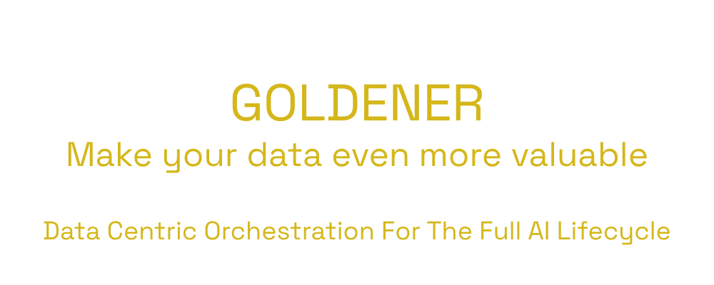

An open-source Python library
for data centric orchestration
across the full lifecycle of AI pipelines,
from raw samples to a model in production.

Data is the new gold. Turning it into value is the real challenge.
Goldener helps you make the most of the data you already have. It orchestrates data across the full lifecycle of an AI pipeline (sampling, labeling, training, evaluation, monitoring), so the right data is available at the right time.
Every feature is built on one core idea: the semantics of a data sample can be captured by embeddings extracted from a pre-trained or foundational model. That representation is general enough to reveal what makes samples similar, redundant, or uniquely informative.
One framework, all of data centric AI
From raw samples to a model watched in production, Goldener stays in the loop.
Collect
Raw, unlabeled data
Describe
Embeddings from pre-trained models
Select
Representative subset
Annotate
Speed up & curate
Split
Optimal distribution
Organize
Balanced batches
Model selection
Faster iterations
Monitor
Drift & performance in production
Data centric AI with Goldener today
A growing set of data centric building blocks, each one usable on its own, or composed into a pipeline.
Smart sampling for annotation
Find the most representative subset of unannotated data to send for labeling, using semantic knowledge extracted from embeddings. The annotation budget goes where it matters.
Representative train / validation splits
Split annotated data so the training set captures the full variability of the task, while validation stays lean and informative.
Clustering for annotation guidelines
Surface the different "modes" hiding in a dataset, then use each cluster to write sharper, mode-specific annotation guidelines.
Dimensionality reduction
Shrink the memory footprint and speed up downstream tasks, it is a lever for tight hardware budgets or time-constrained requests.
Balanced batch sampling
Group data into content clusters and draw each training batch evenly across them, so underrepresented cases stop getting drowned out.
Built for messy data and real-world constraints
AI is deployed everywhere, on every kind of data. Successful AI are built through fast iterative loops leveraging scarse and uneven compute resources dealing with continuous ever-growing datasets. Goldener is designed around that reality.
Modality-agnostic
Every feature works on any data modality: text, image, video, tabular even multimodal data.
Customizable
Features are built on pluggable tools with standard APIs, so anyone can implement their own.
Standard dependencies
Built on PyTorch, NumPy and scikit-learn, thus compatible with the pipelines you already run.
Progressive batching
Every task can stop and resume on demand or on failure. Nothing already computed is recomputed.
Multipurpose embeddings
Computed once, reused for any data centric process all over the AI lifecycle.
Distributed first
Any task can be distributed across multiple machines, adapting to your computing resources.
On-demand pipelines
Processing pipelines are serializable, stored and ready whenever a new request comes in.
Go farther in data centric AI
Every step of the AI lifecycle hides inefficiencies that data centric processes based on embeddings can solve. goldener-research is the community's open lab for gathering bibliography, ideas, research plans and experiment results on those problems, so the strongest ones can graduate into Goldener.
One theme, one folder
The repository is organized around focused research themes. Each one gathers the resources worth knowing, open ideas and questions, concrete research plans, and documented results. This is a shared foundation for researchers, contributors and AI agents alike.
Visit goldener-research →Install it and put it to work
Goldener installs in one line and plugs straight into any PyTorch-based pipeline through a handful of composable building blocks.
Have a question or a bug?
Open an issue on GitHub, it's the fastest way to reach a maintainer.
Open an issue →Want to see it in action?
Browse the feature walkthroughs with runnable code for each building block.
See the features →Curious about the research?
Explore the experiments feeding future Goldener features.
Visit goldener-research →Pick an issue, ship a feature or a fix
Goldener is Apache-2.0 licensed and grows through its contributors.
Browse ready issues
Look through issues labeled ready, and pick your favorite.
Claim it
Comment on the issue to get assigned to it, so no one else duplicates the work.
Implement
Fork the repo, and integrate your changes on a branch.
Open a pull request
A maintainer will review it and help you get it merged.